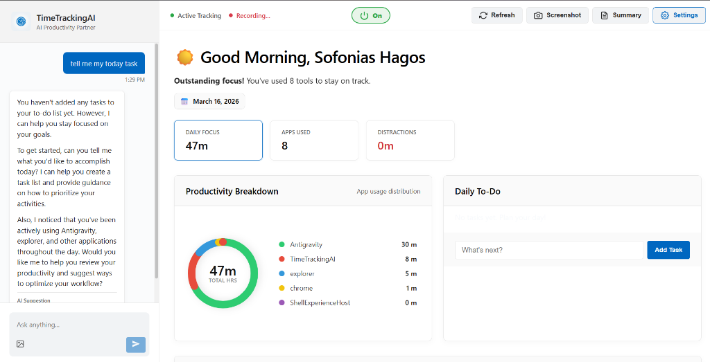

TimeTrackingAI combines deep OS integration with next-gen Llama 4 Vision to give you real-time insights into how you work. Secure, private, and beautiful.

Every tool you need to master your time in one premium Windows app.
Advanced Llama 4 Vision analyzes your workflow and provides personalized tips based on what's actually on your screen.
Visualize your day with high-fidelity charts that update instantly as you switch between tasks and projects.
Stay focused with native Windows notifications that nudge you toward your goals without being intrusive.
We believe in absolute privacy. That's why TimeTrackingAI uses a Bring Your Own Key (BYOK) model. Your Groq API keys are encrypted and stored locally in the Windows Credential Manager. No cloud, no tracking, just precision.